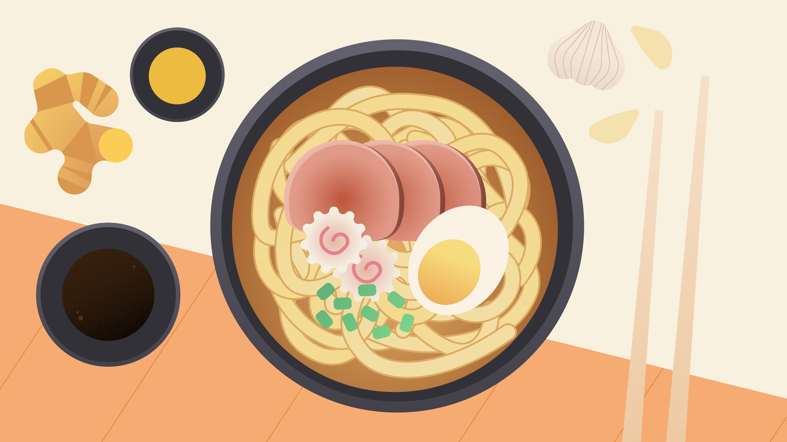

Ramen

Riquisimo Ramen!
El mejor ramen traido directo de japon
Ingredientes:
- Puerro
- Cebolla
- jengibre
- Zanahoria
- Ajo
- Huevos
- cerdo
- Fideos
- Salsa de soja
- sake
- mirín
- azúcar
- verdeo
- Sal
Pasos:
- Separar la costilla de cerdo del hueso. Poner el hueso en una olla con agua a hervir. Cuando cambie de color, retirarlo y lavarlo con agua fría.
- Colocar en una olla con agua: el hueso de costilla de cerdo, el puerro (reservar 1 de las hojas), 3 dientes de ajo machacados, 3 rodajas de jengibre, la cebolla y la zanahoria. Agregar sal. Hervir 1 hora a fuego lento.
- Dorar la costilla de cerdo (la parte sin hueso) en una sartén, de ambos lados. Una vez dorada, agregarla en la olla y dejarla 10 minutos.
- Poner a hervir en agua con un chorro de vinagre los 2 huevos. Dejar 6 minutos en total… ¡no más que eso! Enfriar y pelar.
- Poner en una olla aparte la salsa de soja, el mirín, el azúcar y el sake. Agregar el diente de ajo machacado, la rodaja de jengibre y la hoja de puerro que habíamos reservado. Cocinar a fuego lento y apagar cuando rompa el hervor.
- Colocar a marinar en esta salsa el cerdo y los huevos enteros y pelados. Mínimo 1/2 hora.
- Cocinar la pasta como indica el paquete.
- Emplatar: colocar en el plato 3-4 cucharadas soperas de la salsa de soja de la marinada. Agregar la porción de fideos en el centro y caldo de la sopa hasta completar la mitad del plato. Poner en un costado el cerdo, cortado en tiras finas. En el otro, un huevo partido al medio (la yema deberá estar casi líquida). Llover con la cebolla de verdeo cortada muy finita y en chanfle. ¿Por qué en chanfle? porque da Japo, está claro. Y ya saben que la cocina japonesa es más que nada un ejercicio estético.
Volver al menu